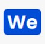

Projects

Medical Website
At WeCare, we prioritize mental well-being as a cornerstone of overall health. Our specialized Mental Health Department offers compassionate and comprehensive care for individuals facing mental health challenges.

Zomato Clone
Zomato Clone is an innovative web application inspired by the popular food delivery platform, Zomato. It allows users to discover, explore, and order from a diverse range of local restaurants, all from the comfort of their own homes.
Weather Website
My Weather is your go-to destination for accurate and up-to-date weather information. Get real-time forecasts, temperature trends, and precipitation updates for your location and beyond.